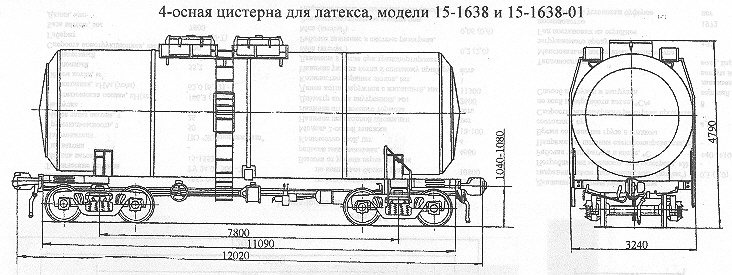

Назначение: для перевозки латекса
Параметры
| Номер проекта | 1638.00.000 |
| Технические условия | |
| Модель вагона | 15-1638 15-1638-01 |
| Тип вагона | |
| Изготовитель | Концерн "Азовмаш" |
| Грузоподъемность, т | 66,8 65,5 |
| Масса тары вагона, т | 25,5 27,7 |
| Нагрузка: статическая осевая, кН(тс) |
226,4(23,1) 230,54(23,5) |
| погонная, кН/м(тс/м) | 75,16(7,67) 75,95(8,75) |
| Объем котла, м3 | 63,4 |
| Скорость конструкционная, км/ч | 120 |
| Габарит | 1-Т |
| База вагона, мм | 7800 |
| Длина, мм: по осям сцепления автосцепок |
12020 |
| по концевым балкам рамы | 11090 |
| Высота от уровня верха головок рельсов максимальная, мм | 4790 |
| Ширина максимальная, мм | 3240 |
| Количество осей, шт. | 4 |
| Модель 2-осной тележки | 18-100 |
| Наличие переходной площадки | нет |
| То же с ручным тормозом | нет |
| Наличие стояночного тормоза | |
| Диаметр котла внутренний,мм | 3120 |
| Длина котла наружная,мм | 11090 |
| Удельный объем, м3/т | 0,95 |
| Количество верхних люков, шт. | 2 |
| Наличие уклона котла к сливному прибору | есть |
| Условное рабочее давление в котле (по регулировке предохранительного клапана), МПа(кгс/см2) | 0,05(0,5) |
| Давление создаваемое в котле при гидровлическом испытании, МПа(кгс/см2) | 0,4(4,0) |
| Количество секций котла, шт. | 1 |
| Наличие парообогревательной рубашки | нет |
| Наличие теплоизоляции | есть |
| Толщина теплоизоляции, мм | 149 |
| Наличие теневой защиты | нет |
| Наличие экрана днища | нет |
| Температура при наливе,ºС | 40 |
| Способ выгрузки | Нижний самотеком |
| Год постановки на серийное производство | |
| Возможность установки буфера | нет |
Примечание: у исполнения 18-1638-01 котел цистерны установлен на платформу рамной конструкции